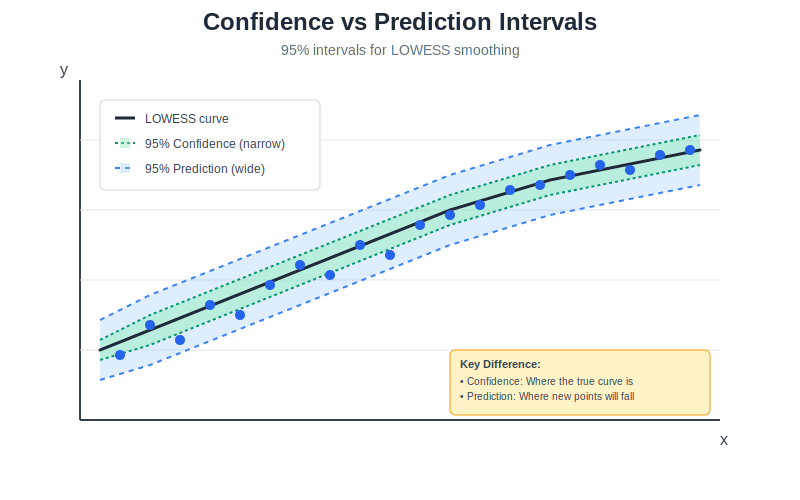

Advanced Usage
This section details the advanced features of fastlowess, including robustness, adaptive optimization, cross-validation, and detailed outputs.
Robust Smoothing
The package provides multiple methods for handling outliers. By default, it uses Bisquare weighting with 3 robustness iterations.
Robustness Methods
fastlowess supports three methods for downweighting outliers:
Method |
Behavior |
Use Case |
|---|---|---|
Bisquare |
Smooth downweighting |
General-purpose (default) |
Huber |
Linear beyond threshold |
Moderate outliers |
Talwar |
Hard threshold (0 or 1) |
Extreme contamination |
from fastlowess import smooth
result = smooth(
x, y,
iterations=5,
robustness_method="talwar"
)
Scaling Methods (Scale Estimation)
Scale estimation determines how residuals are scaled before computing robustness weights.
Method |
Description |
Use Case |
|---|---|---|
MAD |
Median Absolute Deviation |
Default. Robust to 50% outliers. |
MAR |
Median Absolute Residual |
Classic statsmodels behavior. |
# Use MAR scaling to match legacy systems
result = smooth(x, y, scaling_method="mar")
Auto-Convergence
Automatically stop robustness iterations when the smoothed values converge (change drops below threshold).
# Stop iterations if max change < 1e-4
result = smooth(x, y, iterations=20, auto_converge=1e-4)
Boundary & Sparse Data Handling
Manage behavior at dataset edges and sparse regions.
Boundary Policy
Control how the smoother behaves at the edges of the dataset to avoid boundary bias.
“extend” (default): Extends the boundary values (recommended for preserving trends).
“reflect”: Reflects values around the boundary.
“zero”: Pads with zeros (useful for signal processing).
“noboundary”: No padding. Can be faster but may exhibit edge effects.
# Use reflective padding for better edge handling
result = fastlowess.smooth(x, y, boundary_policy="reflect")
Zero-Weight Fallback
In rare cases where a neighborhood contains no points (or weights sum to zero), control the fallback behavior:
“use_local_mean” (default): Uses the mean of the raw neighborhood.
“return_original”: Returns the original Y value for that point.
“return_none”: Returns NaN.
result = fastlowess.smooth(x, y, zero_weight_fallback="return_none")
Cross-Validation
Automatically select the best fraction (bandwidth) from a list of candidates.
fractions = [0.1, 0.2, 0.3, 0.5, 0.7]
result = smooth(
x, y,
cv_fractions=fractions,
cv_method="loocv", # "loocv" (default) or "kfold"
cv_k=5 # Number of folds (if method is "kfold")
)
print(f"Optimal fraction: {result.fraction_used}")
Diagnostics & Detailed Outputs
For in-depth analysis, you can request additional outputs beyond the smoothed curve.
Reliability Diagnostics
Enable return_diagnostics to get objective measures of fit quality.
result = smooth(x, y, return_diagnostics=True)
diag = result.diagnostics
print(f"R-Squared: {diag.r_squared:.4f}")
print(f"RMSE: {diag.rmse:.4f}")
Metric |
Description |
|---|---|
RMSE |
Root Mean Squared Error |
MAE |
Mean Absolute Error |
R-squared |
Coefficient of Determination |
eff_df |
Effective Degrees of Freedom |
Residuals
Enable return_residuals to get the residuals (y - y_hat) directly in the result object.
result = smooth(x, y, return_residuals=True)
residuals = result.residuals
Robustness Weights
Enable return_robustness_weights to inspect which points were downweighted as outliers.
result = smooth(x, y, return_robustness_weights=True)
weights = result.robustness_weights
# Identify outliers (weight < 1.0)
outliers = x[weights < 0.5]
Confidence & Prediction Intervals
Calculate uncertainty bounds for the fit.
{kind=link}
result = fastlowess.smooth(
x, y,
confidence_intervals=0.95, # 95% CI for the mean
prediction_intervals=0.95, # 95% PI for new observations
)
ci_lower = result.confidence_lower
ci_upper = result.confidence_upper
Kernel Selection
You can choose different kernel functions via the weight_function parameter.
fastlowess.smooth(x, y, weight_function="gaussian")
Kernel |
Efficiency |
Smoothness |
Use Case |
|---|---|---|---|
Tricube |
0.998 |
Very smooth |
Default, Best overall |
Gaussian |
0.961 |
Infinitely smooth |
Very smooth data |
Uniform |
0.943 |
None |
Moving average |
Performance Tuning
For performance optimization flags like delta (interpolation) and parallel execution, please refer to the Execution Modes section.